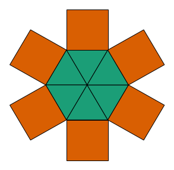
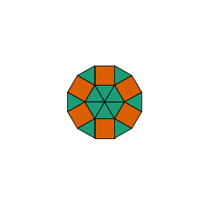
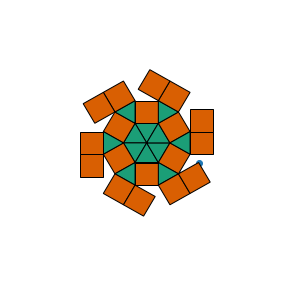
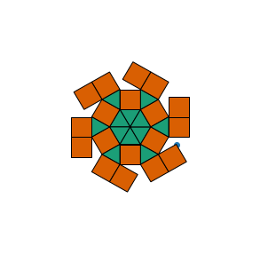

Random tilings¶
from IPython import get_ipython
if get_ipython() is not None:
get_ipython().run_line_magic('load_ext', 'autoreload')
get_ipython().run_line_magic('autoreload', '2')
if get_ipython() is not None:
get_ipython().run_line_magic('matplotlib', 'inline')
from tilings import utils as u
from tilings import base as b
import matplotlib.pyplot as plt
import shapely.geometry as sg
import numpy as np
triangle_pts = [sg.Point(i) for i in [[0,0], [-0.5, np.sqrt(3)/2], [0.5, np.sqrt(3)/2]]]
square_pts = [sg.Point(i) for i in [[-0.5, np.sqrt(3)/2], [0.5, np.sqrt(3)/2], [0.5, 1 + np.sqrt(3)/2], [-0.5, 1 + np.sqrt(3)/2]]]
seed_polys = [sg.Polygon(pts) for pts in u.repeat(triangle_pts)[0] + u.repeat(square_pts)[0]]
seed_t = b.Tiling(polys=seed_polys, u=u.union(seed_polys))
fig, ax = u.setup_plot(extent=5)
u.draw_tiling(ax, seed_t)

fig, ax = u.setup_plot(extent=5)
u.draw_tiling(ax, u.update_tilings([seed_t])[0])

ts = [seed_t]
for i in range(36):
ts = u.update_tilings(ts)
print(i, len(ts))
irreg = u.get_irreg(ts)
if irreg is not None:
print("irreg found")
break
0 1
1 2
2 4
3 4
4 4
5 6
6 9
7 8
8 7
9 10
10 13
11 20
12 26
13 31
14 31
15 18
16 27
17 38
18 54
19 55
20 65
21 67
22 57
23 51
24 35
25 34
26 46
27 45
28 56
29 61
30 86
31 74
32 53
33 55
34 78
35 118
for t in ts[:10]:
fig, ax = u.setup_plot(extent=10)
u.draw_pts(ax, u.nearest_edge(t.u))
u.draw_tiling(ax, t)


for t in ts[-10:]:
fig, ax = u.setup_plot(extent=10)
u.draw_pts(ax, u.nearest_edge(t.u))
u.draw_tiling(ax, t)
 
